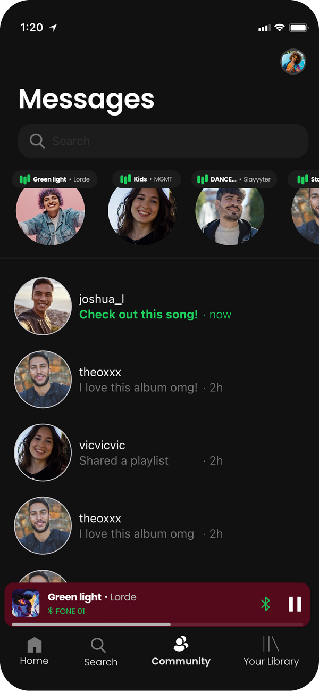
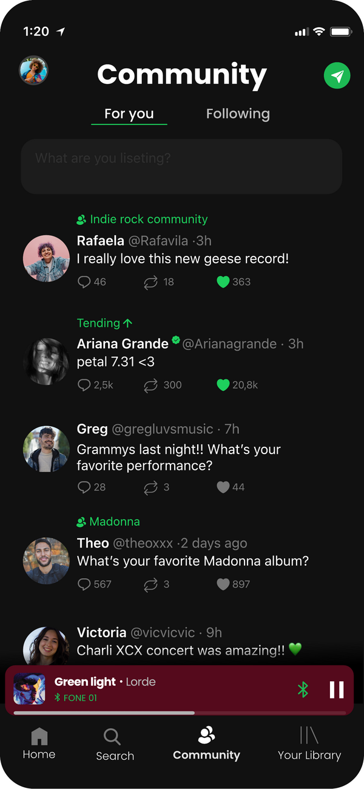

A unified social layer for music discovery.
Academic research turned redesign — proposing both direct messaging and community hubs as complementary features to bring Spotify's social layer to the surface and drive Free → Premium conversion.
Role
UX Research
Mobile Redesign
Timeline
2025 — Ongoing
Context
University thesis
Marketing campaign
Goal
Free → Premium
Conversion

The Brief
Build a campaign that converts free users to Premium.
The thesis brief: design a marketing strategy for Spotify focused on Free → Premium conversion. My team and I approached it as a product design problem — what if the best marketing strategy was actually a product one?
Our hypothesis: music is inherently social, but Spotify's social features are buried, broken, or invisible. Fix the social layer — bring messaging and community to the surface — and you create a Premium experience worth paying for.
Research
The features exist. Nobody finds them.
People share music constantly — just not inside Spotify. They screenshot album art and send it to WhatsApp. They post Now Playing stories on Instagram. Our research confirmed: the desire for musical connection is strong. The problem is discoverability and interface friction — not interest.
The opportunity: design two complementary social layers that live side by side — Messages for intimate 1-on-1 connections, and Community for shared passion around genres and artists.
Low-Fi Wireframes
Mapping both features before committing to pixels.
We started with low-fidelity wireframes to map both features and test with our group — focusing on navigation placement, content structure, and how the free vs. premium experience would feel in each flow.
Hi-Fi Designs
Messages + Community — together.
Both features taken to high fidelity using Spotify's existing design language — dark theme, green accents, same component patterns — so the proposal feels like a natural extension of the product, not a redesign.
Messages gives users a personal space to share songs and playlists with friends. Community gives them a public space to connect around genres, artists, and taste. Together, they make staying inside Spotify feel more natural than leaving it for WhatsApp or Instagram.


Key Decisions
Designing for the platform, not against it.
01
Community as a nav tab
First-class navigation. The feature only matters if users find it — buried settings don't change behavior.
02
Premium as a soft paywall
Free users see the value first, hit limits second. The paywall is the feature working — not a wall blocking it.
03
Music context everywhere
Every message and post anchored in real songs and playlists — never abstract social activity disconnected from listening.